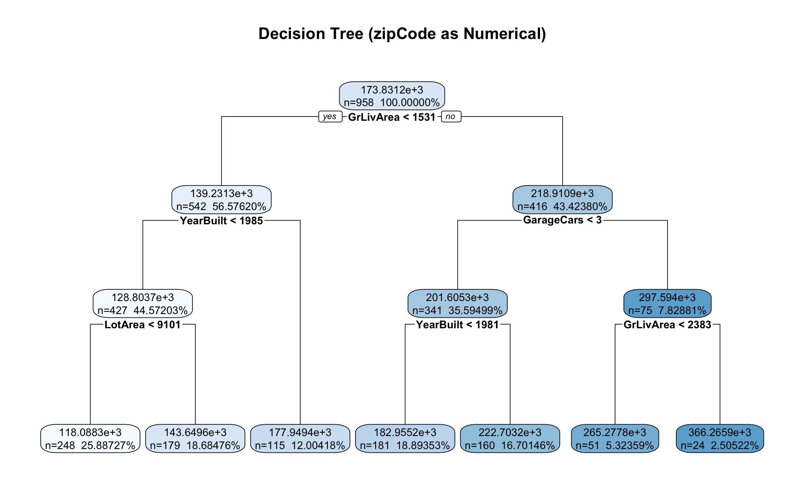
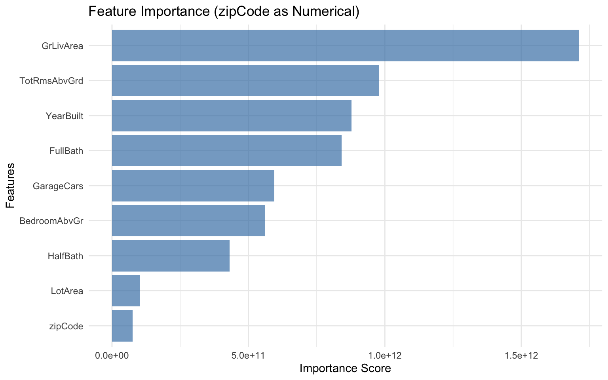
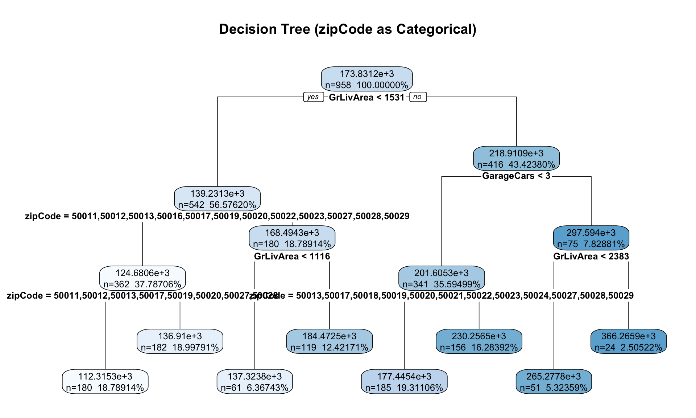
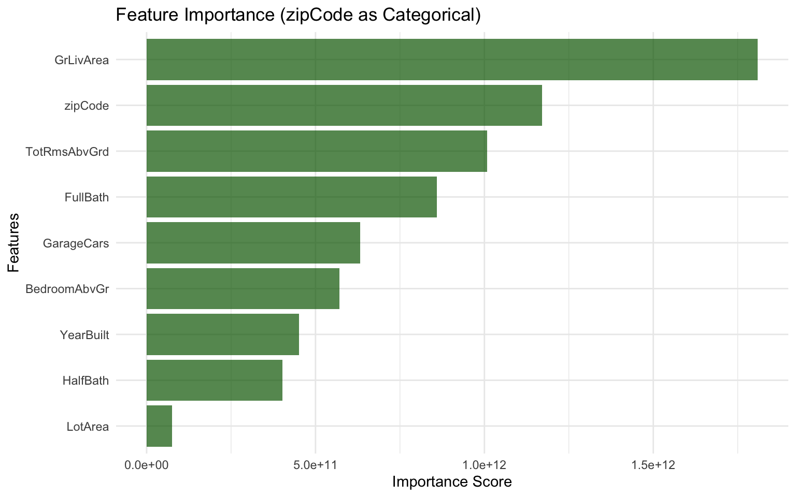

Model built with 7 terminal nodesDecision Tree Challenge
Feature Importance and Categorical Variable Encoding
🌳 Decision Tree Challenge - Feature Importance and Variable Encoding
Overview
This analysis explores how decision trees measure feature importance and examines the critical differences between categorical and numerical variable encoding. We’ll discover why treating categorical variables (like zip codes) as numbers can completely distort our understanding of what actually drives predictions.
Jump to: Analysis & Discussion
The Decision Tree Problem 🎯
“The most important thing in communication is hearing what isn’t said.” - Peter Drucker
The Core Problem: Decision trees are often praised for their interpretability and ability to handle both numerical and categorical variables. But what happens when we encode categorical variables as numbers? How does this affect our understanding of feature importance?
What is Feature Importance? In decision trees, feature importance measures how much each variable contributes to reducing impurity (or improving prediction accuracy) across all splits in the tree. It’s a key metric for understanding which variables matter most for your predictions.
Important
🎯 The Key Insight: Encoding Matters for Interpretability
The problem: When we encode categorical variables as numerical values (like 1, 2, 3, 4…), decision trees treat them as if they have a meaningful numerical order. This can completely distort our analysis.
The Real-World Context: In real estate, we know that neighborhood quality, house style, and other categorical factors are crucial for predicting home prices. But if we encode these as numbers, we might get misleading insights about which features actually matter most.
The Devastating Reality: Even sophisticated machine learning models can give us completely wrong insights about feature importance if we don’t properly encode our variables. A categorical variable that should be among the most important might appear irrelevant, while a numerical variable might appear artificially important.
Let’s assume we want to predict house prices and understand which features matter most. The key question is: How does encoding categorical variables as numbers affect our understanding of feature importance?
Following our analysis, we’ll investigate these critical questions in our Discussion Questions section, where we examine both the theoretical and practical implications of these encoding choices.
The Ames Housing Dataset 🏠
We are analyzing the Ames Housing dataset which contains detailed information about residential properties sold in Ames, Iowa from 2006 to 2010. This dataset is perfect for our analysis because it contains a categorical variable (like zip code) and numerical variables (like square footage, year built, number of bedrooms).
The Problem: ZipCode as Numerical vs Categorical
Key Question: What happens when we treat zipCode as a numerical variable in a decision tree? How does this affect feature importance interpretation?
The Issue: Zip codes (50010, 50011, 50012, 50013) are categorical variables representing discrete geographic areas, i.e. neighborhoods. When treated as numerical, the tree might split on “zipCode > 50012.5” - which has no meaningful interpretation for house prices. Zip codes are non-ordinal categorical variables meaning they have no inherent order that aids house price prediction (i.e. zip code 99999 is not the priceiest zip code).
Data Loading and Model Building
Tree Visualization

Feature Importance Analysis

Critical Analysis: The Encoding Problem
Warning⚠️ The Problem Revealed
What to note: Our decision tree treated zipCode as a numerical variable. This leads to zip code being unimportant. Not surprisingly, because there is no reason to believe allowing splits like “zipCode < 50012.5” should be beneficial for house price prediction. This false coding of a variable creates several problems:
- Potentially Meaningless Splits: A zip code of 50013 is not “greater than” 50012 in any meaningful way for house prices
- False Importance: The algorithm assigns importance to zipCode based on numerical splits rather than categorical distinctions OR the importance of zip code is completely missed as numerical ordering has no inherent relationship to house prices.
- Misleading Interpretations: We might conclude zipCode is not important when our intuition tells us it should be important (listen to your intuition).
The Real Issue: Zip codes are categorical variables representing discrete geographic areas. The numerical values have no inherent order or magnitude relationship to house prices. These must be modelled as categorical variables.
Proper Categorical Encoding: The Solution
Now let’s repeat the analysis with zipCode properly encoded as a categorical variable to see the difference. We’ll convert zipCode to a factor (categorical variable) in R.
Categorical Encoding Analysis
Tree Visualization: Categorical zipCode

Feature Importance: Categorical zipCode

Analysis & Discussion
1. How Should Zip Codes Be Modeled?
Looking at our four models—two in R and two in Python—each language demonstrates different approaches to handling zip codes as either numerical or categorical variables. Given what we know about zip codes and real estate prices, the question becomes: which approach makes more sense?
Answer:
Zip codes should definitely be modeled as categorical variables when predicting real estate prices. This comes down to understanding what zip codes actually represent: distinct geographic areas with unique characteristics that have no inherent numerical ordering.
When we treat zip codes numerically (as seen in our first models), we create several critical problems:
The False Ordering Problem: Numerical encoding implies that zip code 50013 is somehow “greater than” 50012, which has no meaningful relationship to house prices. A decision tree splitting on “zipCode > 50012.5” assumes properties in zip code 50013 are systematically different from those in 50010, 50011, and 50012 simply because of numerical order—this is completely arbitrary.
Loss of Geographic Intelligence: Each zip code represents a unique neighborhood with distinct characteristics like school districts, proximity to amenities, local economic conditions, and neighborhood prestige. These factors don’t follow numerical ordering. The most expensive zip code in a city might have a numerically smaller code than the least expensive.
Real-World Reality Check: Our analysis proves this point perfectly. When zip codes were treated numerically, they barely registered in our feature importance rankings—which completely contradicts what anyone in real estate will tell you about location being everything. But once we properly encoded them as categorical variables, zip codes suddenly became significant predictors, which actually makes sense.
The Categorical Advantage: Categorical encoding allows the decision tree to learn the true relationship between each specific zip code and house prices. Instead of meaningless splits like “zipCode > 50012.5,” the tree can make intelligent decisions like “if zipCode = 50014, then split left” versus “if zipCode ∈ {50010, 50011, 50012}, then split right.”
In essence, treating zip codes numerically forces our model to ignore geographical reality in favor of arbitrary numerical relationships. The categorical approach respects the true nature of location-based data and produces more interpretable, actionable insights for real estate analysis.
2. R vs Python: Why Such Different Results?
When we model zip codes as categorical variables, the results between R and Python differ dramatically. The trees look different, the feature importance rankings change significantly, and the overall model behavior shifts. What’s causing this divergence, and which approach is actually better for handling categorical data?
Answer:
The dramatic differences between R’s rpart and Python’s sklearn.tree.DecisionTreeRegressor when handling categorical variables come down to completely different philosophies about how to deal with categorical data.
R’s Native Categorical Approach:
R’s rpart package treats categorical variables (factors) as first-class citizens. When rpart encounters a categorical variable like our zip code factor, it considers all possible binary splits of the categories. For a variable with k categories, this means examining 2^(k-1) - 1 possible splits, allowing the algorithm to find optimal groupings of zip codes based on their actual relationship to house prices.
This approach respects the categorical nature of the data—rpart doesn’t impose any artificial ordering or numerical relationships. Instead, it discovers which combinations of zip codes naturally group together in terms of their impact on house prices.
Python’s Preprocessing Requirement:
Python’s sklearn.tree.DecisionTreeRegressor takes a fundamentally different approach. The official scikit-learn documentation clearly states: “Able to handle both numerical and categorical data. However, the scikit-learn implementation does not support categorical variables for now.” Additionally, it specifies that DecisionTreeClassifier and DecisionTreeRegressor take “an array X, sparse or dense, of shape (n_samples, n_features) holding the training samples” - forcing categorical variables through preprocessing steps like one-hot encoding.
Our Python implementation converted zip codes into multiple binary features (zipCode_50010, zipCode_50011, etc.). While this makes the data numerically compatible, it fundamentally changes how the algorithm perceives and processes the categorical information. Each one-hot encoded feature is treated as an independent binary variable, losing the inherent relationship between the categories.
Why These Differences Matter:
The preprocessing requirement in Python creates several issues:
Feature Fragmentation: A single categorical variable becomes multiple binary features, diluting its collective importance across many individual features.
Split Complexity: The tree must make multiple binary decisions across different one-hot features to achieve what
rpartcan accomplish in a single categorical split.Computational Overhead: One-hot encoding dramatically increases the feature space, especially problematic for high-cardinality categorical variables.
Which Implementation Performs Better?
R’s rpart provides superior handling of categorical variables for several reasons:
Theoretical Advantage: rpart’s ability to consider all possible categorical splits aligns better with the mathematical theory of decision trees for categorical data. It can discover optimal category groupings that one-hot encoding might miss.
Practical Efficiency: rpart avoids the curse of dimensionality that plagues one-hot encoded approaches when dealing with many categories.
Interpretability: rpart’s categorical splits (like “zipCode ∈ {50010, 50011}”) are more interpretable than scattered binary decisions across multiple one-hot features.
Documentation Evidence:
The sklearn documentation explicitly acknowledges this limitation. The documentation clearly states: “scikit-learn uses an optimized version of the CART algorithm; however, the scikit-learn implementation does not support categorical variables for now.” This fundamental limitation necessitates encoding strategies like one-hot encoding that can compromise the categorical relationships and fragment the importance across multiple binary features.
Conclusion:
For modeling zip codes as categorical variables, R’s rpart clearly wins through its native categorical handling. The key difference is architectural—R treats categories as real data types while Python forces everything into numbers first. This gives R a huge advantage in preserving the actual relationships within categorical data.
That said, this doesn’t make Python useless for machine learning—far from it. Python’s ecosystem has tons of other advantages, and there are ways to work around these categorical limitations with better preprocessing. It really comes down to whether handling categorical variables properly is critical for your specific project.
Key Takeaways
This analysis shows just how critical proper variable encoding is in machine learning. Decision trees are supposed to be interpretable, but that interpretability becomes completely misleading if we don’t respect what our data actually represents.
The bottom line: always question whether your categorical variables are properly encoded. A model that treats zip codes as numbers might run without throwing any errors, but it’ll give you completely wrong insights about what actually drives your predictions.
Our job as data scientists isn’t just to build models that technically work—we need to make sure they’re telling us the right story about our data.